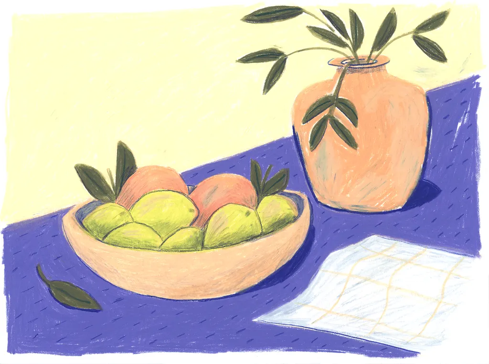
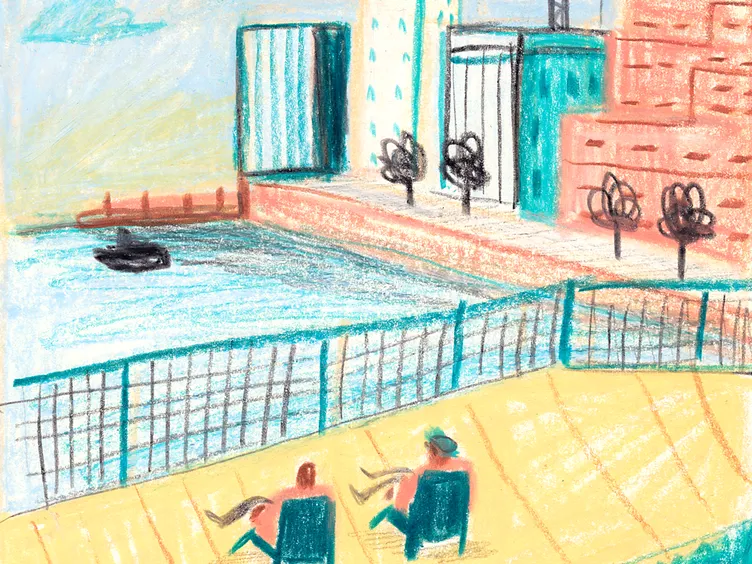
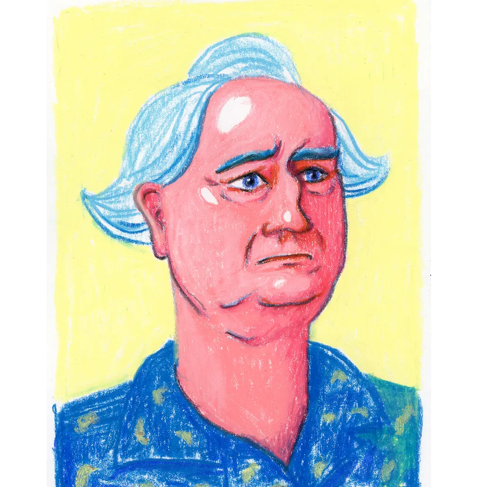

Harvest
Summer Harvest
Limes and peaches in a hand-thrown bowl, a sprig of leaves in terracotta — the colors of a slow afternoon in the kitchen.
Cryon Studio is a small gallery of crayon and oil-pastel works — rustic still lifes, sun-soaked cityscapes, and bold portrait studies drawn with color, not convention.



Three collections
Each piece explores a different palette and mood — from the quiet warmth of a kitchen table to the bustle of a harbor afternoon.
Limes and peaches in a hand-thrown bowl, a sprig of leaves in terracotta — the colors of a slow afternoon in the kitchen.
Two figures watch the water from a sun-yellow pier. Teal fences, peach promenades, and a skyline drawn from memory.
An expressive head-and-shoulders portrait — pink skin tones, icy blue hair, and a gaze that holds its own against the yellow field.
Periwinkle, teal, coral, and cream — color as emotion, not realism.
Visible grain and waxy layers that reward a closer look.
Fruit, foliage, and faces drawn with soft, imperfect lines.
Scenes remembered rather than photographed — harbor, home, and self.
Pick up a crayon
A textured sheet of paper, your favorite colors, and every tool you need — sketch, fill, and color your own still life right in the browser.
Draw with mouse or touch. Shapes preview while you drag.
About the studio
"I don't paint what I see — I paint what the light feels like."
Cryon Studio began on a kitchen table with a box of student-grade pastels and nowhere particular to be. What started as still-life exercises — a bowl of limes, a napkin with a grid — grew into a larger conversation about place, weather, and the people who occupy quiet rooms.
Every work in the Summer Series shares a pale yellow ground, the color of late-morning sun through thin curtains. From there, each piece branches into its own world: the deep periwinkle of a tablecloth, the teal of a harbor railing, the coral flush of a candid portrait.
From the sketchbook
Notes, process thoughts, and the small observations that become paintings.
June 12, 2026
Mixed three blues before landing on periwinkle — it sits between the limes and the peaches without shouting. The napkin grid took longer than the fruit.
June 8, 2026
Drew the fence first. Everything else arranged itself around that teal grid. The two figures came last — they needed to feel like they belonged to the view, not the viewer.
June 3, 2026
Started the portrait as an exercise in wrong colors. The blue hair was accidental; I liked it too much to fix. Sometimes the mistake is the point.
Get in touch
Interested in a portrait, a place, or a still life from your own table? Send a note — I reply within a few days.